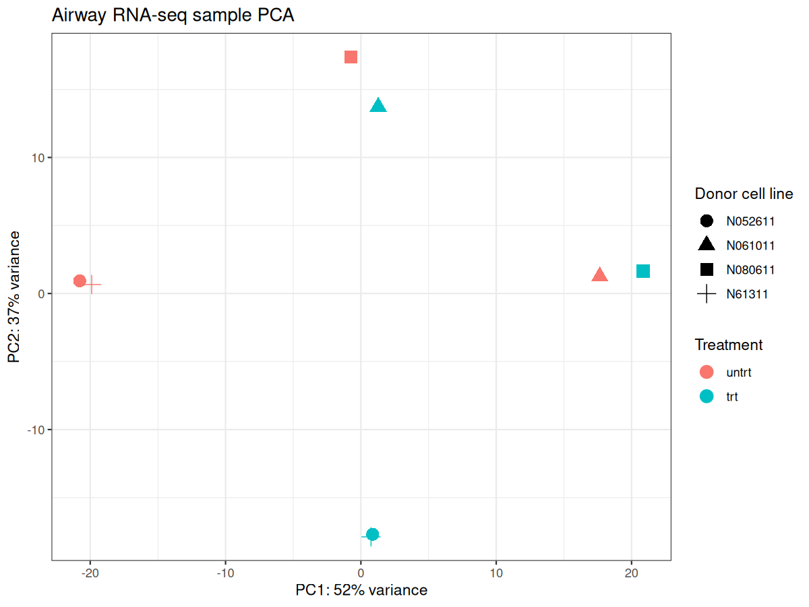
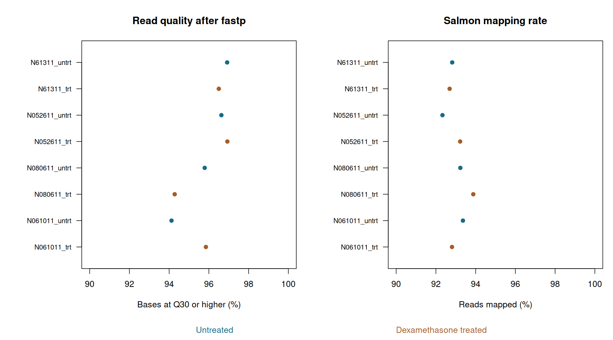
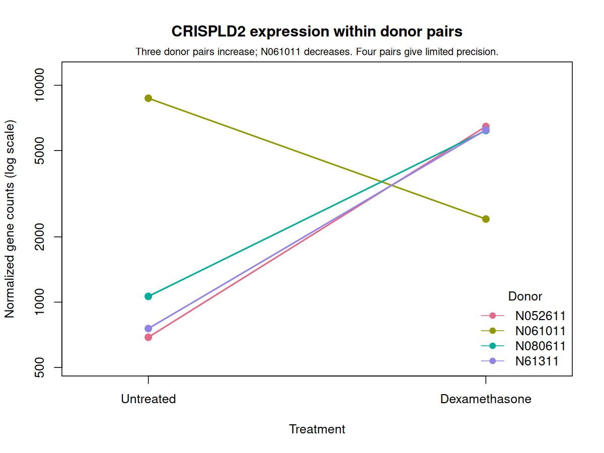
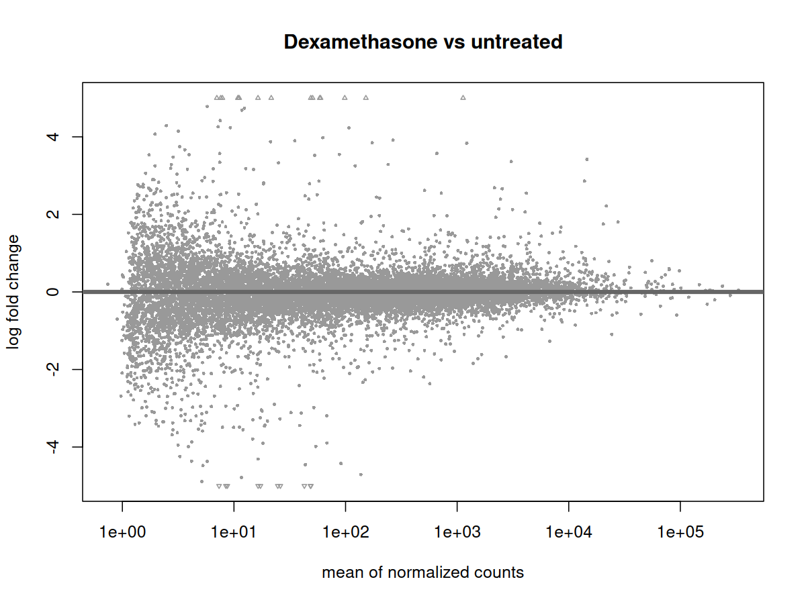
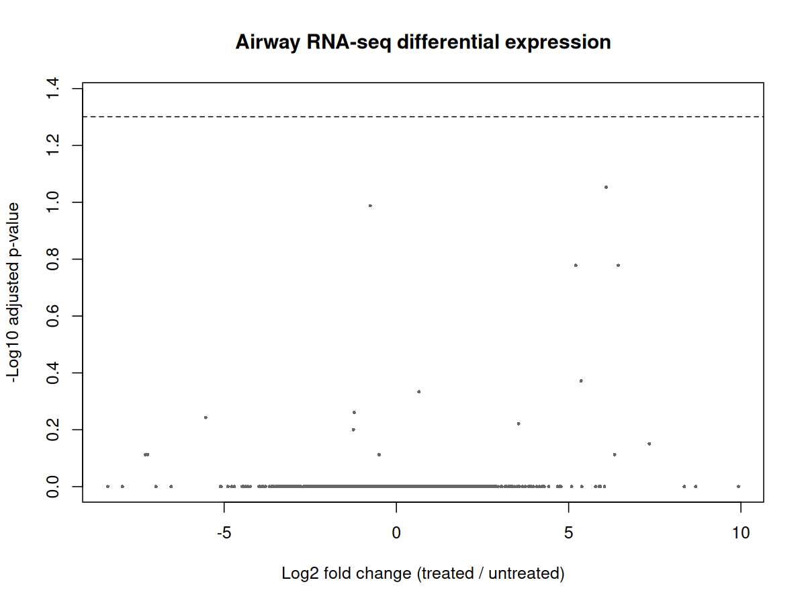
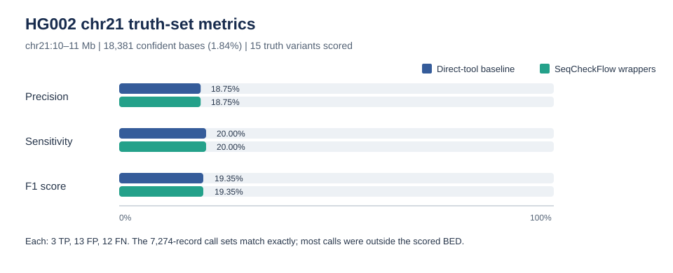
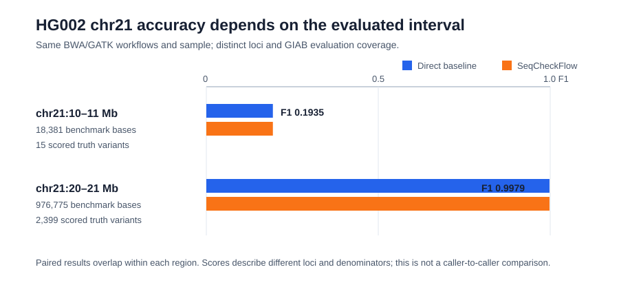
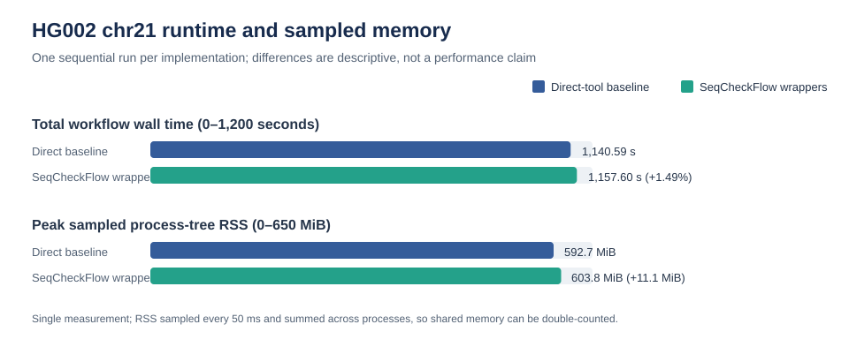

Bioinformatics and computational biology, powered by scientific software.
My primary career track is computational biology, biochemistry, and chemistry. I use scientific computing, bioinformatics, and molecular visualization to explore biological and chemical problems.
Scientific work first, with software depth to build the tools.
I bring a biochemistry foundation to computational biology, bioinformatics, and chemistry work, with the engineering range to develop scientific applications and analysis workflows.
Primary trackComputational biology, biochemistry, and chemistry.
Secondary trackAI engineering, scientific development, and full-stack application work.
Independent explorationSignal processing and audio analysis.
Positioning
Scientific domain expertise, backed by engineering range.
Primary: Computational Biology & Chemistry
Applying computational methods to biological and chemical questions through sequence analysis, molecular tools, and scientific visualization.
Secondary: AI Engineering
Developing retrieval workflows, evaluation logic, LLM integrations, and data-driven applications.
Scientific Development & Full Stack
Building scientific applications, APIs, interactive visualizations, and end-to-end web tools.
Curiosity Projects: Signal Processing
Exploratory audio analysis, filtering, and classification alongside the primary scientific work.
Selected work
Projects that show build depth.
Featured bioinformatics workflow · Reproducible genomics
Reproducible workflows for validating genomics files, analyzing an eight-library airway RNA-seq dataset, and comparing a regional HG002 variant-calling workflow with direct-tool baselines.
RNA-seq libraries8Salmon mapping: 92.3–93.9%
Differential expression0Genes at BH-adjusted p < 0.05
HG002 chr21 interval0.9979F1 across 976,775 confident bases
Exploratory RNA-seq reanalysis and regional benchmark results; these figures do not establish broad biological or clinical validity.
How to read the colors: red means a gene’s normalized expression is higher than its average across these samples; blue means lower; pale cells are near that gene’s average. Each row is scaled independently (row z-score), so colors compare samples within a gene—not expression levels between different genes. This exploratory view does not show statistical significance.
Workflow results

Sample relationships · PCA

Per-sample read quality and mapping

CRISPLD2 expression by donor

DESeq2 · MA plot

DESeq2 · volcano plot

HG002 · wrapper parity and truth-set scores

HG002 · regional accuracy

HG002 · runtime and memory
System design
SeqCheckFlow architecture
The project has separate paths for file summaries, RNA-seq, and regional variant benchmarks. The single-file CLI does not automatically download, align, or call variants.
01 · Single-file QC and summary
Local FASTA / FASTQ / VCF / BAM / CRAM
→
Detect format and validate
→
Format-specific metrics and checks
→
JSON + text reports
NCBI download and remote BLAST are separate opt-in helpers.
A separate benchmark command compares wrapper and direct-tool callsets on the same inputs.
AI simulation platform · TypeScript backend · RAG pipeline
Alexandria Virtual Patient
Role: Backend / AI Systems EngineerStack: TypeScript, RAG, ChromaDB, Docker, Socket.IO, Deepgram STTFocus: Real-time medical reasoning system with retrieval and evaluation methodology
End-to-end AI system for EMS training that simulates clinical reasoning, grounds responses in retrieved protocols, and evaluates trainee actions against rule-based medical criteria.
Built the orchestrational RAG loop in TypeScript.
Used ChromaDB + multilingual-e5-large embeddings for 104 EMS queries.
Used Docker to containerize and deploy the RAG environment consistently across local and deployment workflows.
Delivered scenario debriefs after completion using Socket.IO and Deepgram speech-to-text.
Reduced hallucination risk through retrieval grounding and clinical-rule validation.
Design tradeoff: higher recall at K=5 accepted lower precision, with confidence gating to filter weak context.
A retrieval-grounded EMS training loop that combines protocol retrieval with a rule-based evaluation gate to reduce hallucination risk and preserve safety-critical intent.
Section-level chunking retained protocol flow while keeping retrieval concise.Multilingual-e5-large embeddings improved clinical terminology coverage and ranking quality.
Architecture compresses to a real-time pipeline where user actions flow from browser → Socket.IO → SimulationOrchestrator → RAG retrieval → grounded response synthesis.
Core flow
Trainee action captured via UI or speech intent.
Rule-based evaluation validates decisions before state changes.
State update adjusts vitals, symptoms, and scenario progress.
RAG response retrieves protocol context and generates grounded patient dialogue.
Scenario debrief delivers outcome and audit trail after the simulation concludes.
Curiosity-driven scientific exploration · Signal processing
SignalProcessor
Project type: Independent explorationStack: Python, NumPy, SciPy, FastAPI, scikit-learn, Web Audio APIQuestion: How much can simple DSP improve noisy speech, and what trade-offs appear in real-time processing?
A hands-on investigation of noisy audio: inspect it, try filtering and denoising methods, compare the results, and see how much of the pipeline can fit on constrained hardware.
Approach
Used FFT and waveform views to inspect recordings, then explored filtering, denoising, smoothing, and gating in Python.
Observation
On the recorded speech sample used in the prototype, measured SNR moved from 1.8 dB before processing to 4.93 dB after processing. One real-time implementation measured 18 ms latency.
Built a browser-based workbench for live microphone capture, waveform/spectrum inspection, and listening to processed audio.
Added a small-data classifier experiment with a review step for labeled and unlabeled WAV examples.
Kept the FastAPI processing and retraining endpoints as a way to compare the Python prototype with the browser-based workbench.
Scope: these measurements are exploratory observations from prototype recordings, not a general benchmark of speech enhancement quality.
PythonSignal processingFFTFastAPIscikit-learnWeb Audio API
Interactive biochemistry learning platform bringing static textbook concepts to life with 3D molecules and live simulations.
Interactive biochemistry learning app with 3D molecular visualization, AlphaFold structure integration, enzyme kinetics simulation, KaTeX equations, and a practice problem bank.
Role: Bioinformatics / ML EngineerStack: Python, Pandas, scikit-learn, JupyterFocus: Reproducible model comparison for biological sequence classification
Rigorous six-algorithm comparison on protein sequences using consistent evaluation methodology.
Built to test which ML approach generalizes best on bioinformatics classification tasks.
Supervised ML comparison across six algorithms on a protein sequence dataset, using consistent scikit-learn pipelines for preprocessing, training, and model evaluation.
Public health data · Virginia & Roanoke City (2016–2023)
Regional Health Analysis
Role: Data / Analytics EngineerStack: Python, Pandas, statistical analysis, dashboardingFocus: ETL-style data cleaning, age-adjusted rates, trend analysis, and public-health reporting
Evidence-based epidemiological analysis surfacing structural health disparities using age-adjusted rates and longitudinal trend data.
Built to make invisible inequity visible through rigorous statistical methodology.
Epidemiological analysis of chronic disease hospitalization data across Virginia and the Roanoke City
Health District, using age-adjusted rates, distribution comparisons, and longitudinal trend analysis
to surface structural health disparities across six major chronic conditions.
Analyzed CVD, diabetes, COPD, asthma, hypertension, and CKD hospitalization rates from the Virginia Department of Health dataset (2016–2023).
Applied age-adjusted rate normalization to enable valid cross-region comparisons.
Built an interactive dashboard to visualize trends and regional disparities over time.
Roanoke City consistently showed higher age-adjusted hospitalization rates than Virginia statewide for most chronic conditions from 2016 through 2023. Despite a decline after 2019, the city never closed the gap — indicating structural rather than incidental inequity.
CVD and hypertension dominate both regions
Cardiovascular disease and hypertension represent the highest hospitalization burden in both Virginia and Roanoke City. Diabetes and high blood cholesterol consistently rank among the top contributors — forming a cluster of interrelated metabolic conditions.
Greater variability in Roanoke signals instability
Box-and-whisker distributions show wider spread in Roanoke City compared to the more stable statewide average. Higher variability suggests a less predictable hospitalization burden — consistent with populations at elevated risk for preventable admissions.
Raw hospitalization counts alone are misleading because hospitalization risk scales with age. This analysis used age-adjusted rates per 100,000 to normalize for demographic differences, making Roanoke–Virginia comparisons methodologically valid rather than superficial.
Computational chemistry
Molecular Builder
Role: Computational Science Tooling DeveloperStack: JavaScript, browser UI, 3D visualizationFocus: Chemistry interaction model and molecule-building interface
Interactive organic chemistry toolkit: sketch molecules, view 3D structures, calculate properties, and explore bonding.
Browser-based tool for constructing and visualizing molecular structures interactively, connecting JavaScript UI work with computational chemistry concepts.
Python audio analysis, FFT, filtering, denoising, and exploratory classification
Education
Computer science and biochemistry.
2024-2026
M.Eng Computer Science and Applications
Virginia Tech | Blacksburg, VA
2016-2021
B.S. Biochemistry
Virginia Tech | Blacksburg, VA
Scientific foundation for biological data, molecular systems, and computational biochemistry.
Contact
Seeking computational biology, biochemistry, and chemistry roles.
My primary focus is scientific work across biology and chemistry. I also bring AI engineering, scientific development, and full-stack experience to teams building tools for research and discovery.
Reach out by email or LinkedIn about scientific roles and cross-disciplinary engineering opportunities.